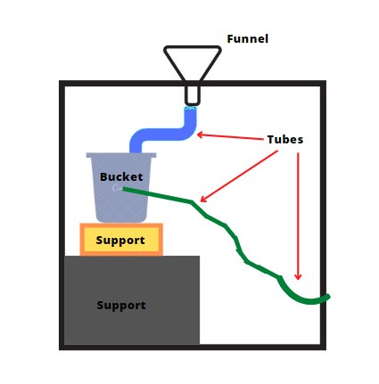
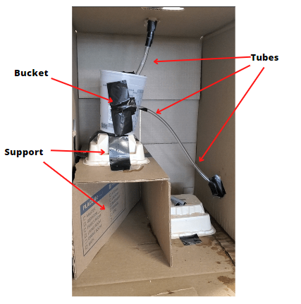

Our design is not what is in the mystery black box.
The data we collected was in two parts, from our project and from the actual mystery black box. From the actual mystery black box, we poured in many different amounts of water at a time and then measured the amount that poured out. With some exceptions, the amount of water that went in was usually more than what had come out. A notable data piece was that when we poured in 3000mL, a much bigger amount than previous tests, the box started to leak from the side a bit. From our project of trying to replicate the box, we got a not similar result to the box. The amount of water poured in was almost always around the amount poured out. The most notable part was a set of three 50mL tests, a short amount, in a row and only got 135mL after the third test; the first two did not output anything.
| Input | Output | |
| 1 | 500mL | 0mL |
| 2 | 500mL | 550mL |
| 3 | 500mL | 490mL |
| 4 | 500mL | 500mL* |
| 5 | 500mL | 500mL |
| 6 | 250mL | 250mL |
| 7 | 50mL | 0mL |
| 8 | 50mL | 0mL |
| 9 | 50mL | 135mL |
| 10 | 1000mL | 800mL** |
*About 10mL was lost due to an error
**Lost a good amount of water due to an overflow
Models, or prototypes, are functional representations of a structure that you plan to build. They can be useful in testing possible solutions to a design challenge, as they can provide insight into whether or not your hypothesis is correct or not. A general strength of a model is that they provide a visual representation of your ideas, and general limitations are that they might not be exactly to size, or they might be simpler than the actual mechanism.

Due to all the tests not being the same as the box with only a few exceptions. There were some times when our design and the box’s results were similar, such as in trial 2 when 500mL went in and 500mL went out, but that was not our design being similar, rather that was our design mostly outputting what was inputted in it. There was a similarity in how it leaked and outputted less water like how it did in the original box, but that seems more coincidence since if it did not leak the amount outputted would have likely been close to the amount inputted, continuing the pattern it had already set.
If someone were to argue that it was our design inside the box, the data would have supported that. Since the data does not support that, that means it is not our design. While there were similar results, the results were not consistent enough to be considered close enough to the actual box.
